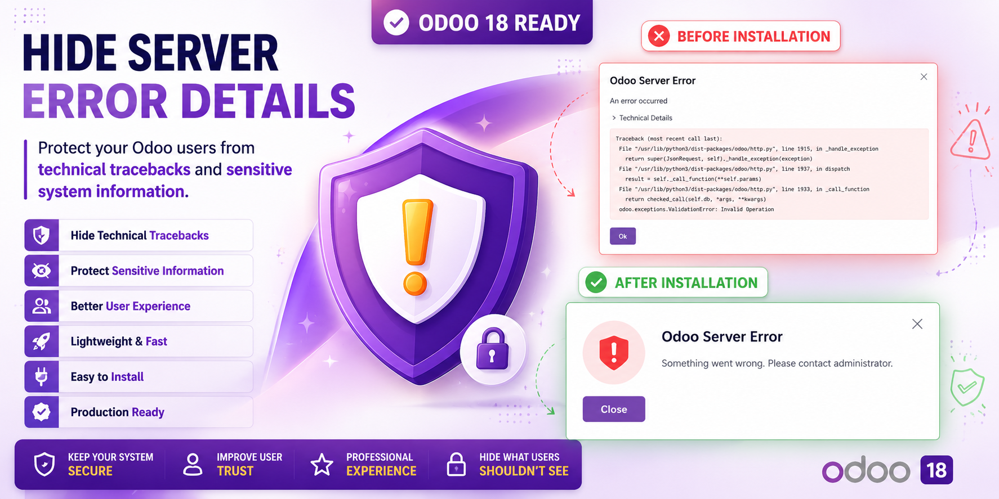
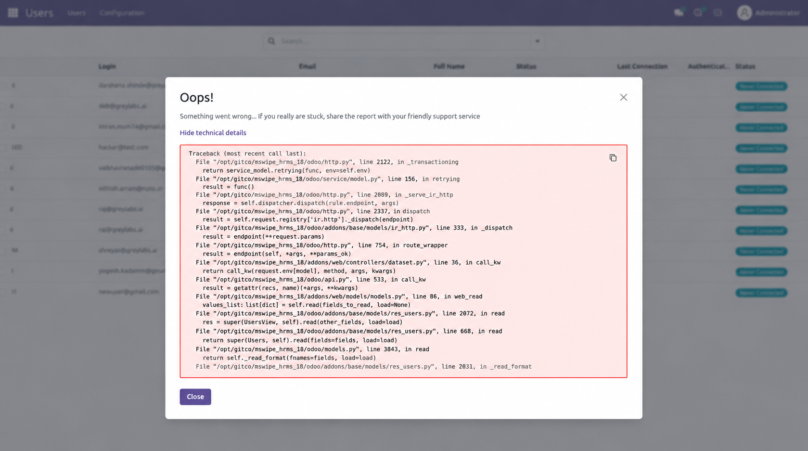
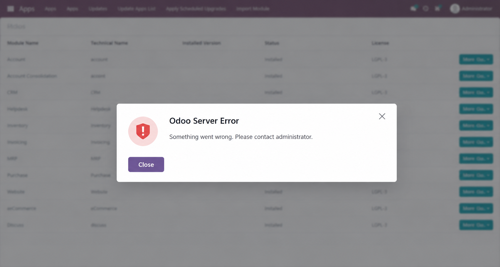
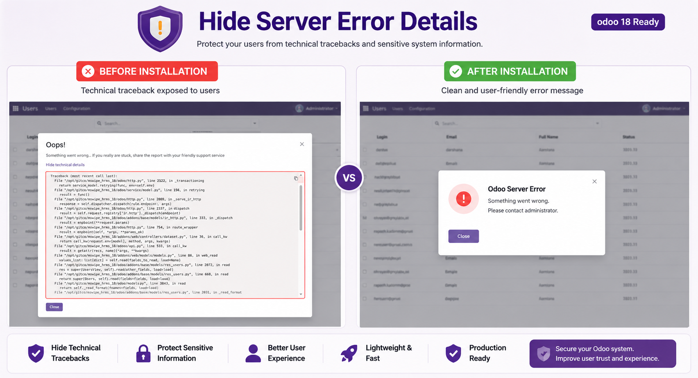

Protect your Odoo users from technical tracebacks, internal file paths, debugging information and unnecessary system details.

By default, Odoo may display detailed traceback information whenever a server-side error occurs. These messages can expose internal implementation details such as:
While useful for developers, these details should not be visible to end users in production environments.
This module replaces technical information with a clean and professional error experience.
🔒 Hide Technical TracebacksPrevent end users from viewing Python tracebacks and stack traces. |
🛡 Protect Sensitive InformationHide file paths, internal code references and implementation details. |
⚡ LightweightNo heavy processing or performance impact. |
🎯 Better User ExperienceShow clear and professional error messages. |
🔧 Easy InstallationInstall like any standard Odoo application. |
🚀 Production ReadyPerfect for customer-facing deployments. |
❌ Before Installation
|
✅ After Installation
|

Before Installation

After Installation

Comparison View
✔ Odoo 18 Community Edition
✔ Odoo 18 Enterprise Edition
For installation assistance, customization requests or support, please contact us through the Odoo Apps messaging system.